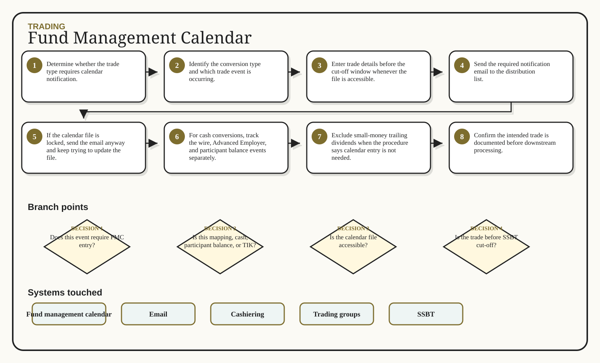

01
Determine whether the trade type requires calendar notification.
The fund management calendar documents trade intent for large conversion-related trades. It varies by conversion type and has strict timing expectations around SSBT cut-off and trade-notification groups.
Determine whether the trade type requires calendar notification.
Identify the conversion type and which trade event is occurring.
Enter trade details before the cut-off window whenever the file is accessible.
Send the required notification email to the distribution list.
If the calendar file is locked, send the email anyway and keep trying to update the file.
For cash conversions, track the wire, Advanced Employer, and participant balance events separately.
Exclude small-money trailing dividends when the procedure says calendar entry is not needed.
Confirm the intended trade is documented before downstream processing.
The 4 PM EST SSBT cut-off matters.
Vanguard and other timing exceptions can be stricter.
TIK shares are generally outside the cash-trade calendar logic.
Locked files do not remove the email-notification requirement.
Cash conversions can have three separate trading events.
